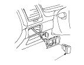
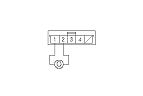
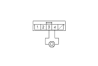

VSA OFF Switch Test
Remove the VSA OFF switch (A) from the switch panel.
Disconnect the VSA OFF switch 5P connector.

Check for continuity between the VSA OFF switch 5P connector terminal No. 1 and No. 2. There should be continuity when the switch is pressed, and no continuity when the switch is released.

Check for continuity between the VSA OFF switch 5P connector terminal No. 3 and No. 4. There should be continuity at all times.
